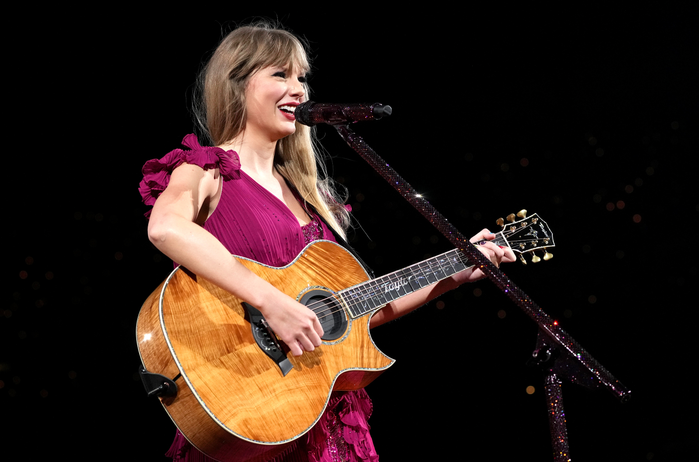
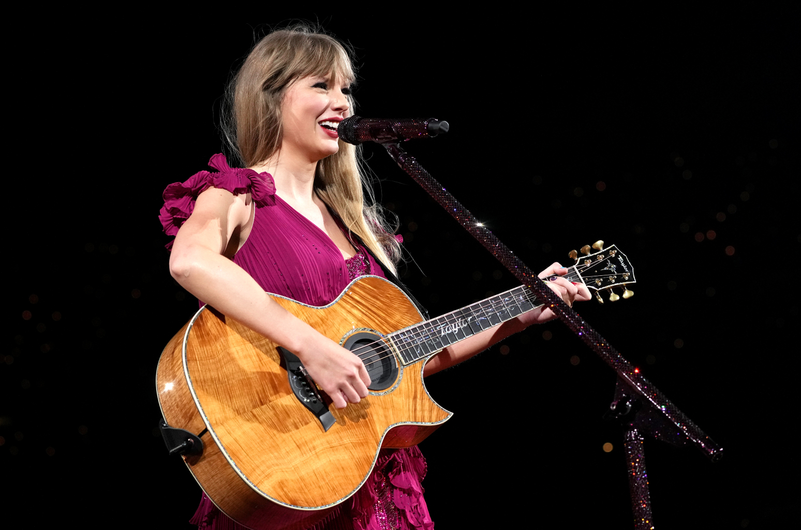

Surprise Songs at the Eras Tour
 

Taylor Swift's Eras Tour visited five continents, had 149 shows, and spanned nearly 2 years.
The setlist included 44 songs and performances from Taylor's prolific career.
Even with such an extensive setlist, Taylor had hundreds of songs in her discography to perform. Because of
this, she created an acoustic portion of the show that included two unique songs each night, first on the
guitar and then the piano. The acoustic songs included album songs not on the usual setlist,
mashups of fan favorites and even duets with surprise guests.
The "Surprise Song" portion of the show quickly became one of the most loved and watched. Taylor often gave anecdotes
before playing songs and slipped in subtle details not in the recorded versions. Among the Swiftie community, Eras tour
dates are discussed based on the surprise songs that were played at that show. This page gives Swifties the ability to add
the songs that were played at their show, and rank the combinations played during the duration of the tour.